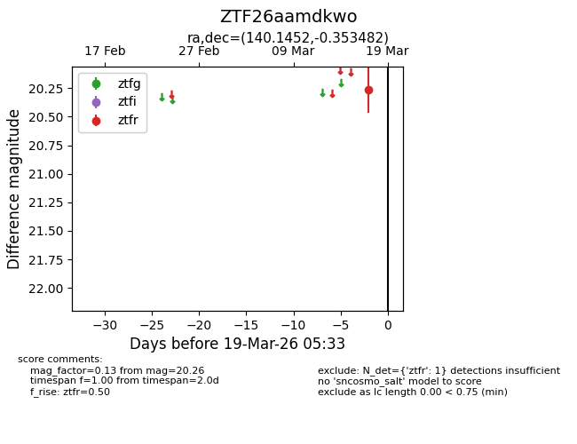
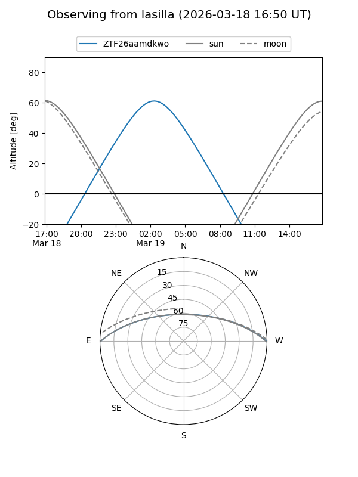
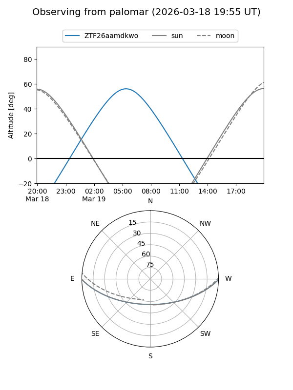

ZTF26aamdkwo
Target ZTF26aamdkwo at 2026-03-19 05:36
Aliases and brokers:
FINK: link
Lasair: link
ALeRCE: link
alt names
ZTF26aamdkwo (ztf,fink_ztf)
Coordinates:
equatorial (ra, dec) = 140.1452,-0.35348
equatorial (HMS+DMS) = 09:20:34.86,-00:21:12.54
galactic (l, b) = (232.4304,+32.43369)
Flags:
Photometry:
last ztfr=20.26
1 ztfr detections
Lightcurve

Visibility


Additional plots